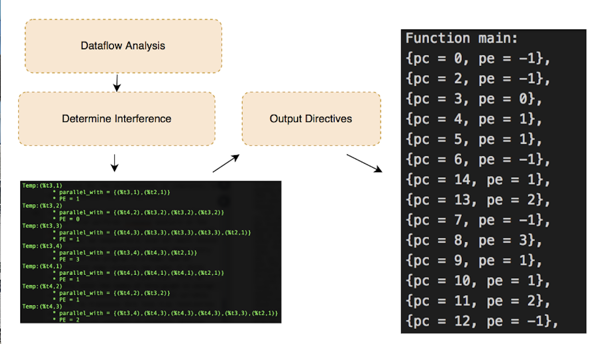
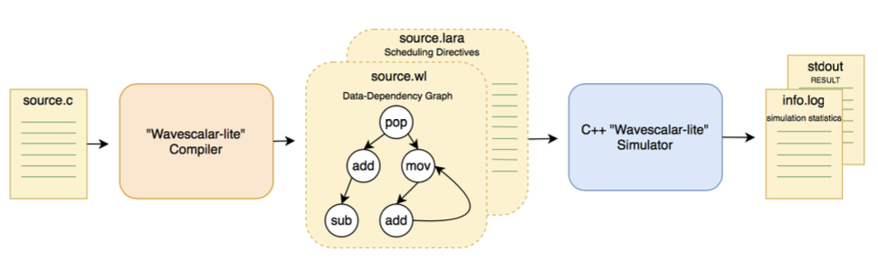

Project Description
Interligua is an optimizing C compiler. I implemented it with a buddy of mine.
The compiler takes in a single source file (does not implement any preprocessing).
The front end consists of a lexer, parser.
At which point the code is converted to an AST
After type checking is done, the codegen output is turned into a CFG and put into SSA form for optimization.
Several types of optimization are done, after which the CFG is flattened, register-allocated, and output.
Compiler frontend
-
The most interesting parts of the compiler are our analysis passes:
- Simplify CFG
- Critical edge splitting
- SSA (Construct dominator graph)
- Generic dataflow pass (for liveness, PRE)
-
The optimization passes:
- BB reordering
- Strength reduction
- Register coalescing
- SCCP
- PRE
- DCE
- Function inlining
- Tail-call optimizations
Optimization timing
-
And the extra modes:
- Wavescalar mode - compile to the Wavescalar dataflow architecture instead of x86
- Theorem-proving mode - inspired by the Dafny language
Proving statements about code as part of typechecking
Wavescalar mode was done in an effort to research different hardware scheduling algorithms for dataflow architectures. The compiler backend computed producer/consumer relationships with dataflow analysis and divided code into waves.
WaveScalar backend

LARA algorithm for PE scheduling

WaveScalar simulation system architecture